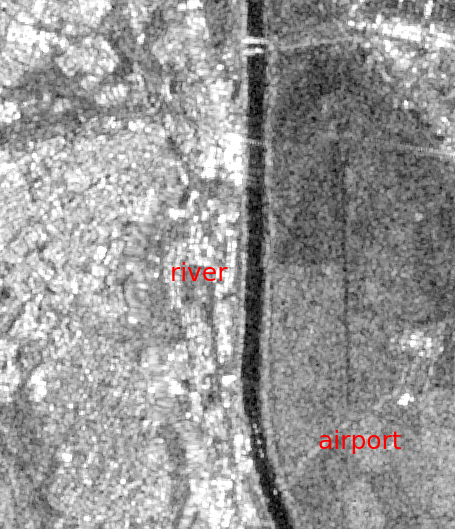
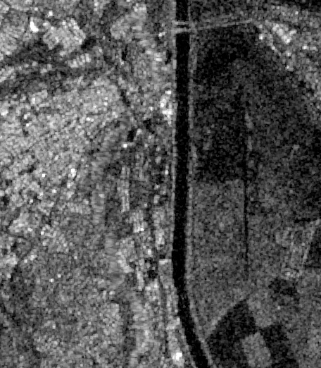
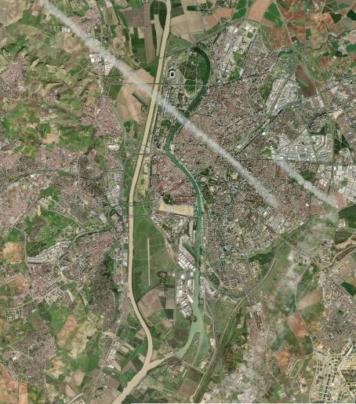
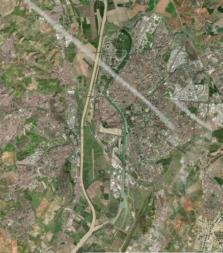
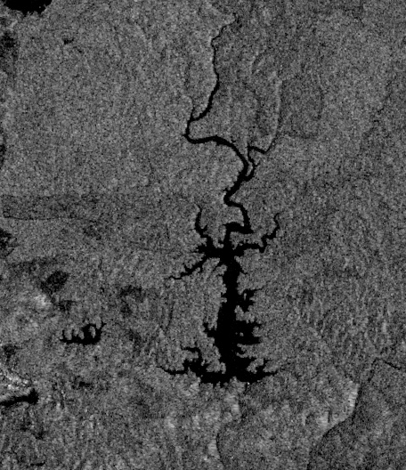
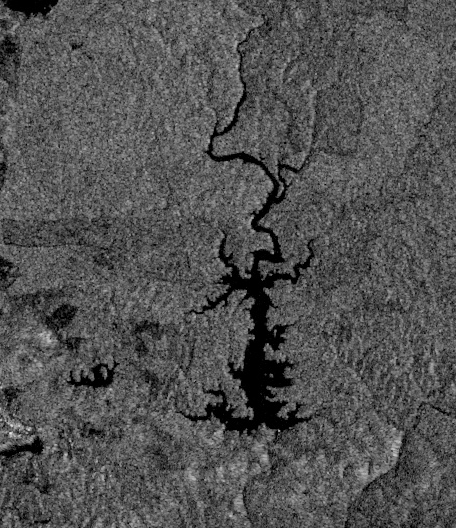

4 Question N° 04
Inspect the intensity VV and the intensity VH band. Zoom in to the different areas (for example agriculture area, urban areas, river, etc.). Create a screenshot, and describe the differences between VV and VH polarization for each of the example areas.
VV and VH (radar backscatter) contains information about the Earth’s surface, their intensity are driven by:
- The frequency or wavelength: Radar parameter
- Incidence angle: Radar parameter
- Dielectric constant: Surface parameter
- Surface roughness relative to the wavelength: Surface parameter
The SAR images were taken with a different of 45 days. Therefore, could exist high different of soil moisture between both images.
Agriculture:


Overall, it can be said that VH is darker than VV. It also manifests more spatial variance and correspondence to the tilled agricultural fields if we compare with the high-resolution optical image. In both images, dark values seems to be related to rough surface scattering, while gray and white values with the volume scattering and double bounce respectively.
Urban areas:
  

 

Like the zoom in agriculture areas, in urban areas VH are darker than VV values. In SAR images urban areas almost always present the brightest pixels since that the dominant mechanism is the double bounce. However, specific regions like airstrip or other plane/smooth could present low backscattered intensity.
Water bodies
 
 
Water bodies are dark in both VV and VH imagesfor two reasons: the high dialectric constant of the water (~80) and the smooth of the surface of the water.